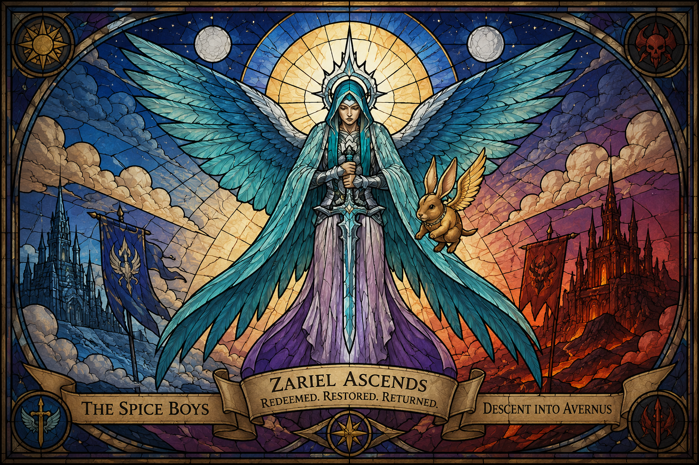

Deep Memory
Descent into Avernus · Where the archive keeps what the table lived
Avernus chamber
Deep Memory chamber for The Spice Boys — Descent into Avernus and its continuation, Mortal Ascension. One room in the larger site vault.
Archive campaign — dossiers only. Character sheets upon request.
Campaign home holds the short party story. This chamber holds discovery reports and companions. All chamber doors →
Archive status
After Elturel was saved and Zariel’s path turned, the story stayed with the heroes — their choices, their futures, and the name that stuck: the Spice Boys.
Discovery Reports
Character Discovery Reports — story and presence as earned. Incomplete is honest. Pending dossiers wait until evidence is ready.


Discovery Report pending
Companions
With the company — not of the company roster. Always NPCs.